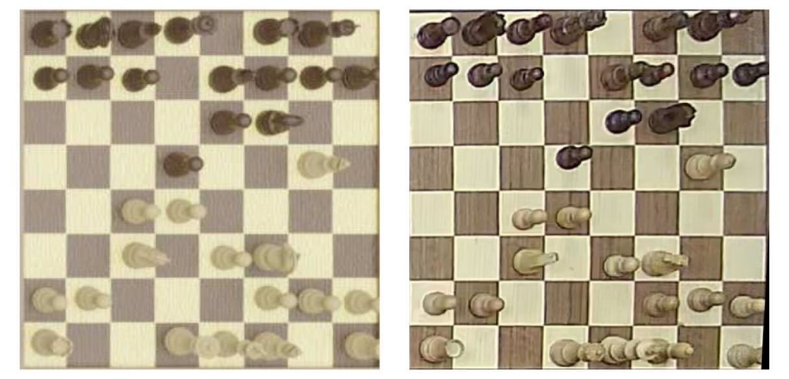
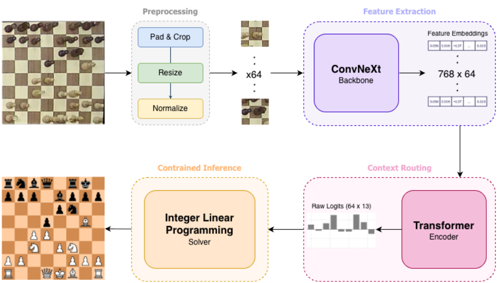
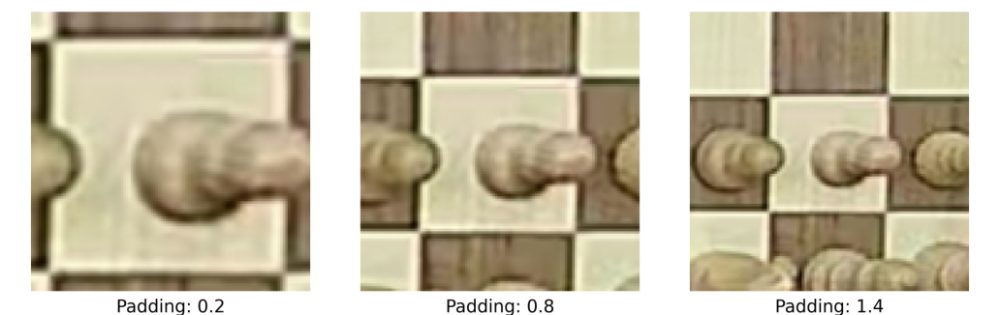
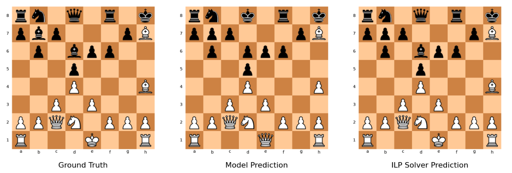
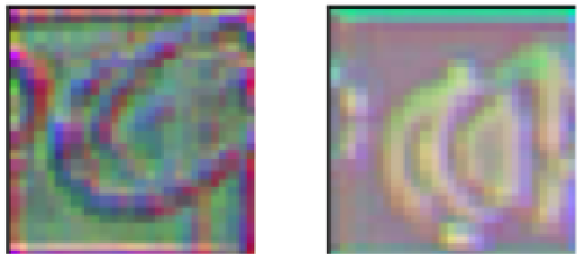

Synthetic Is All You Need?
Chessboard State Classification from Synthetic Data with Global Context and Logically Constrained Inference
Abstract
Transferring computer vision algorithms from simulation to real-world deployment remains difficult because lighting, textures, sensor noise, reflections, and camera artifacts create a substantial domain gap. This project studies the synthetic-to-real generalization problem for chessboard state classification: given a single RGB image of a physical board, the model predicts the state of each of the 64 squares and reconstructs the corresponding board state.
We bridge the gap with a high-fidelity Blender rendering pipeline, a local ConvNeXt feature extractor combined with Transformer-based global board context, and an Integer Linear Programming solver that enforces chessboard legality constraints over the neural network logits. After zero-shot training on synthetic data and targeted real-world fine-tuning, the final model reaches 97.3% real-world test accuracy.
Research Overview
The pipeline combines data-centric simulation, neural architecture design, and chess-specific logical constraints.
High-fidelity Blender rendering
The synthetic pipeline models physical chessboard traits such as realistic wood grain, specular highlights, calibrated lighting, camera jitter, rotations, sensor noise, dithering, and JPEG compression.
Local features plus global context
Each board is decomposed into 64 padded square crops. ConvNeXt-T extracts local visual features, while a Transformer Encoder routes information across the complete board.
ILP as a logic filter
An Integer Linear Programming solver chooses the highest-scoring legal board configuration, enforcing constraints such as one king per color, piece-count limits, and invalid pawn locations.
Visual Pipeline
Figures adapted from the paper highlight the core sim-to-real and constrained-inference design choices.




Methodology
The system is designed around the fact that chessboard state recognition is both a visual task and a structured prediction task.
1. Synthetic dataset generation
FEN strings are converted into rendered chessboards using a parameterized Blender pipeline. Materials, lighting, viewpoints, piece rotations, and image degradation are randomized to encourage robust features instead of overfitting to clean synthetic edges.
2. Input representation
The 480 x 480 board image is split into an 8 x 8 grid. Each square is padded, resized to 112 x 112, normalized, and treated as one token in an ordered 64-square sequence.
3. Feature extraction and context routing
ConvNeXt-T produces a local embedding for every square. Learned positional embeddings and multi-head self-attention allow the Transformer Encoder to use board-level spatial relationships when resolving ambiguous crops.
4. Constrained inference
The ILP solver maximizes the selected logits while enforcing single occupancy, king counts, maximum piece counts, class-specific limits, and invalid pawn rank constraints.
Datasets and Evaluation
The experiments use three carefully separated datasets to measure the domain gap, zero-shot transfer, and real-world adaptation.
- Naive Synthetic: low-fidelity Blender renders from documented chess games, used as the baseline for quantifying the sim-to-real gap.
- High-Fidelity Synthetic: 1,800 training images from 600 unique random FEN positions rendered from three perspectives.
- Real-World Target: 238 training images, 67 validation images, and a 204-image holdout test set from distinct real matches.
Secondary metric: board-level accuracy, where a board is correct only if all 64 squares are classified perfectly.
Experimental Results
The results show a consistent progression: high-fidelity synthetic data improves zero-shot transfer, global context improves the ConvNeXt baseline, and targeted real-world fine-tuning reaches the strongest per-square accuracy.
Zero-shot transfer
| Architecture | Training Data | Augmentation | Padding | Accuracy |
|---|---|---|---|---|
| ResNet18 | Naive | None | 0.0 | 63.42% |
| ResNet18 | Naive | Blur, Noise, Jitter | 0.0 | 66.89% |
| ResNet18 | High-Fidelity | None | 0.0 | 72.10% |
| ResNet18 | High-Fidelity | None | 1.0 | 80.92% |
| ConvNeXt-T | High-Fidelity | None | 1.0 | 86.86% |
| ConvNeXt-T + Transformer | High-Fidelity | None | 1.0 | 87.55% |
Real-world domain adaptation
| Strategy | Backbone State | Square Accuracy | Board Accuracy |
|---|---|---|---|
| Linear Probing | Frozen | 96.65% | 16.67% |
| Stage-4 Unfreezing | Final Stage Fine-Tuned | 97.27% | 25.49% |
| Joint Training | End-to-End Trained | 95.94% | 32.35% |
ILP solver contribution
| Architecture | Phase | Raw Accuracy | Solver Accuracy | Gain |
|---|---|---|---|---|
| ResNet18 | Zero-Shot | 76.64% | 80.92% | +4.28 |
| ConvNeXt | Zero-Shot | 84.78% | 86.86% | +2.08 |
| ConvNeXt + Transformer | Zero-Shot | 85.81% | 87.55% | +1.74 |
| ConvNeXt (Frozen) | Fine-Tuning | 94.69% | 96.65% | +1.96 |
| ConvNeXt (Unfrozen) | Fine-Tuning | 95.87% | 97.27% | +1.40 |

What the Ablations Show
Global context matters. Adding the Transformer Encoder improves raw zero-shot accuracy by routing information across all 64 square embeddings before logical filtering.
Logic matters. The ILP solver consistently increases accuracy across baselines and fine-tuned models without additional training, because it removes impossible board states that a purely probabilistic classifier may output.
ConvNeXt was the most effective backbone. DINO-pretrained ViT variants underperformed in this constrained dataset regime, likely because convolutional inductive biases are well-suited to localized chess-piece geometry.
Limitations and Future Work
The synthetic dataset size and rendered physical phenomena were bounded by available computational resources and time. Future work can scale the Blender pipeline with larger datasets, broader randomization ranges, additional materials, more piece geometries, and richer lighting conditions. These improvements may further narrow the visual domain gap and make zero-shot deployment more reliable without physical fine-tuning.
Video Presentation
Project presentation linked from the original page.
This section was kept because the original page already included a concrete presentation video link.
BibTeX
@misc{zmora_vinman_synthetic_2026,
title = {Synthetic Is All You Need?},
author = {Jonathan Zmora and Lior Vinman},
institution = {Ben-Gurion University of the Negev},
year = {2026},
note = {Introduction to Deep Learning project},
url = {https://github.com/JonathanZmora/ChessClassification}
}